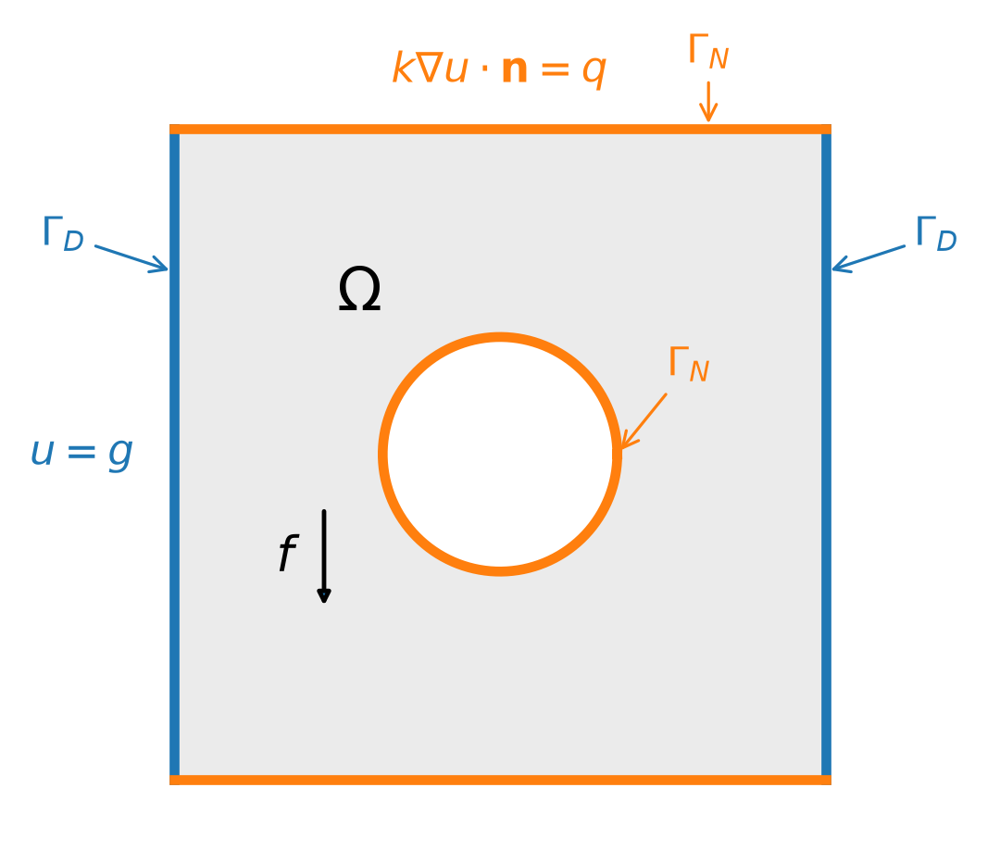
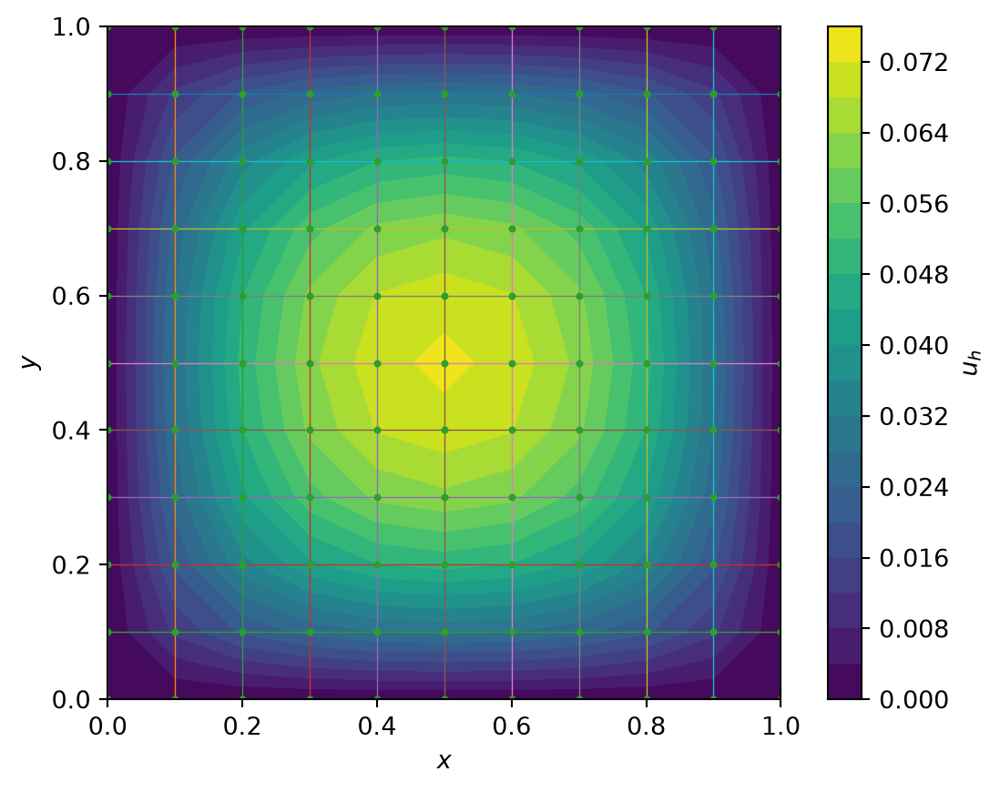
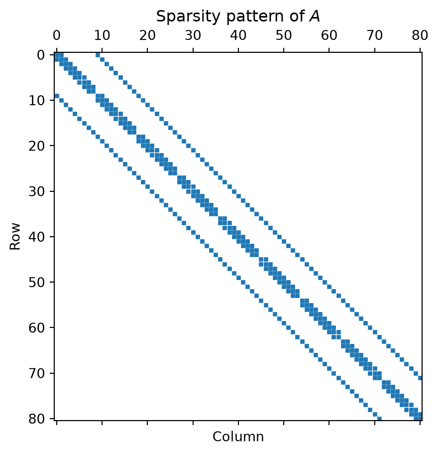
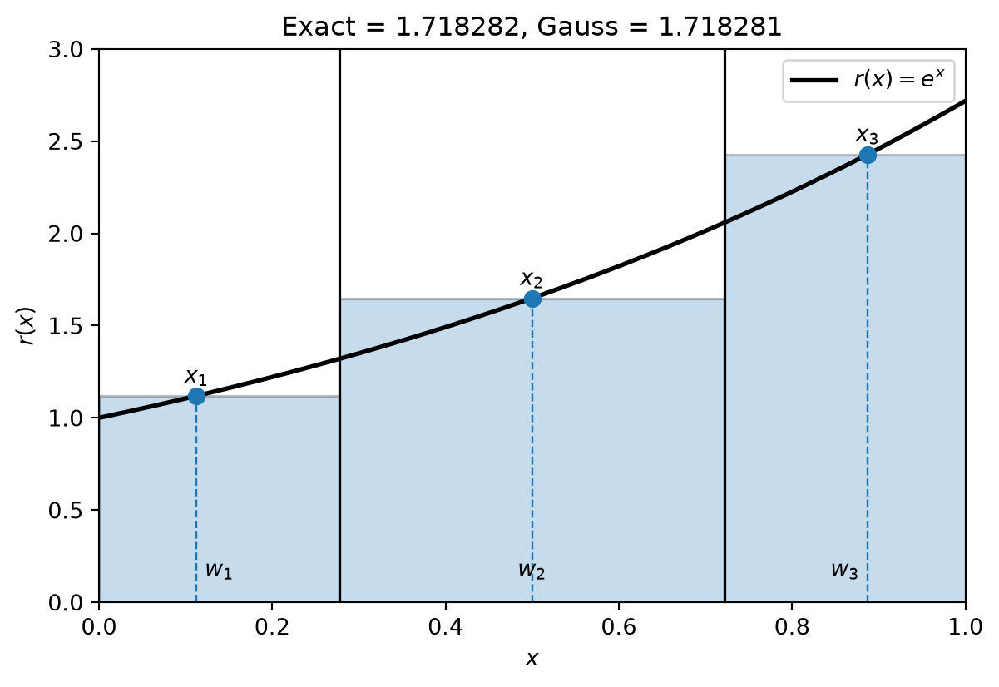
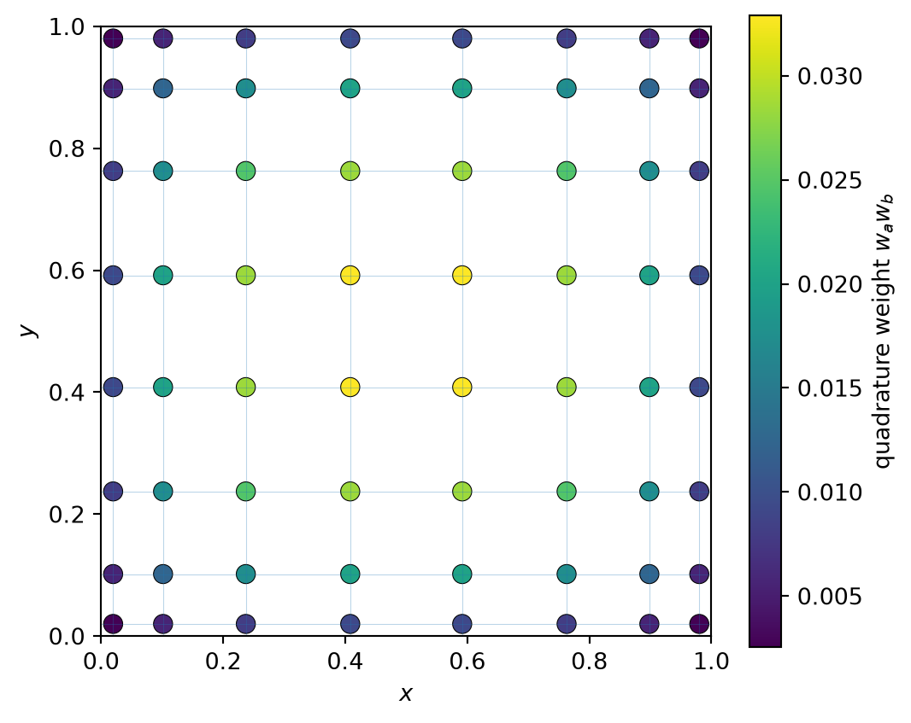
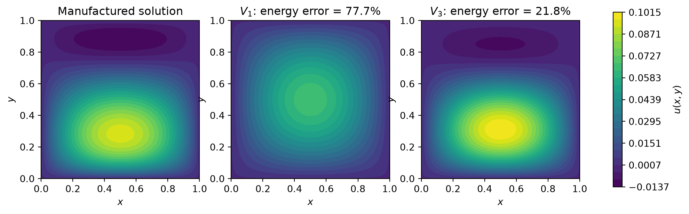

Session 1 — Galerkin approximations for diffusion problems
Learning objectives
By the end of this session, students should be able to:
- distinguish strong and weak formulations of a diffusion problem;
- derive finite-difference and weak formulations of the model problem;
- formulate a finite-dimensional Galerkin approximation;
- use a manufactured solution and numerical quadrature to assess a numerical approximation;
- interpret Galerkin approximation as an orthogonal projection and explain its best-approximation property;
- relate this optimality property to Céa’s lemma and heterogeneous diffusion;
- motivate the use of mesh-based finite-element approximation spaces.
Schedule
| Time | Topic |
|---|---|
| 0–10 min | Diffusion equation and model problem |
| 10–25 min | Finite differences |
| 25–43 min | Strong form to weak form |
| 43–58 min | Galerkin approximation, orthogonality, and projection |
| 58–73 min | Manufactured solution and numerical quadrature |
| 73–78 min | Non-homogeneous Dirichlet conditions |
| 78–85 min | Céa’s lemma |
| 85–90 min | Why finite elements? |
1 Model problem: diffusion equation
Consider a domain \(\Omega\subset\mathbb R^2\) whose boundary is decomposed into a Dirichlet part \(\Gamma_D\) and a Neumann part \(\Gamma_N\):
\[ \partial\Omega = \overline{\Gamma_D} \cup \overline{\Gamma_N}, \qquad \Gamma_D\cap\Gamma_N=\varnothing. \]
We consider the diffusion problem
\[ \boxed{ -\nabla\cdot\left(k\nabla u\right)=f \qquad\text{in }\Omega, } \]
where \(k\) is the diffusion coefficient; depending on the physical problem, it may represent, for example, a thermal conductivity or a diffusivity.
The boundary conditions are
\[ \boxed{ u=g \qquad\text{on }\Gamma_D, } \]
and
\[ \boxed{ k\nabla u\cdot\mathbf n=q \qquad\text{on }\Gamma_N, } \]
where \(\mathbf n\) is the outward unit normal. The Dirichlet data \(g\) may be zero or non-zero.
In the case
\[ k=1, \]
the equation reduces to the Poisson equation
\[ -\Delta u=f. \]
2 A first discretization: finite differences
Before introducing finite elements, consider the one-dimensional problem
\[ -u''(x)=f(x), \qquad x\in(0,1), \]
with
\[ u(0)=u(1)=0. \]
Introduce a regular grid
\[ x_i=ih, \qquad i=0,\ldots,N. \]
Using Taylor expansions around (x_i),
\[ u(x_i+h) = u(x_i) + h u'(x_i) + \frac{h^2}{2}u''(x_i) + O(h^3), \]
and
\[ u(x_i-h) = u(x_i) - h u'(x_i) + \frac{h^2}{2}u''(x_i) + O(h^3). \]
Adding the two expressions gives
\[ u''(x_i) \approx \frac{ u_{i-1}-2u_i+u_{i+1} }{h^2}. \]
Therefore
\[ \boxed{ \frac{ -u_{i-1}+2u_i-u_{i+1} }{h^2} = f_i. } \]
For the interior unknowns this gives
\[ \frac{1}{h^2} \begin{pmatrix} 2 & -1 & & \\ -1 & 2 & -1 & \\ & \ddots & \ddots & \ddots \\ & & -1 & 2 \end{pmatrix} \begin{pmatrix} u_1\\ u_2\\ \vdots\\ u_{N-1} \end{pmatrix} = \begin{pmatrix} f_1\\ f_2\\ \vdots\\ f_{N-1} \end{pmatrix}. \]
2.1 Interpretation
Finite differences proceed directly from the differential equation:
\[ \boxed{ \text{PDE} \longrightarrow \text{approximation of derivatives at grid points}. } \]
The unknowns (u_i) approximate point values
\[ u_i \approx u(x_i). \]
2.2 The two-dimensional stencil
On a Cartesian grid,
\[ -\Delta u = -\frac{\partial^2u}{\partial x^2} - \frac{\partial^2u}{\partial y^2}. \]
For a regular square grid with spacing (h),
\[ -\Delta u_{ij} \approx \frac{ 4u_{ij} -u_{i-1,j} -u_{i+1,j} -u_{i,j-1} -u_{i,j+1} }{h^2}. \]
This corresponds to the classical five-point stencil:
-1
|
-1 4 -1
|
-1This method is extremely natural on a rectangular domain with a Cartesian grid.
2.3 Finite-difference example
Consider
\[ -\Delta u = 1 \]
on the unit square
\[ \Omega=(0,1)^2, \]
with homogeneous Dirichlet boundary conditions
\[ u=0 \qquad \text{on } \partial\Omega. \]
We solve the discrete system numerically using a finite-difference approximation on a Cartesian grid.
import numpy as np
import matplotlib.pyplot as plt
# Number of intervals in each direction
N = 10
h = 1 / N
# Complete grid, INCLUDING the boundary
x = np.linspace(0, 1, N+1)
y = np.linspace(0, 1, N+1)
X, Y = np.meshgrid(x, y)
# Number of interior points in one direction
n = N - 1
# 1D finite-difference matrix
T = (
2*np.eye(n)
- np.eye(n, k=1)
- np.eye(n, k=-1)
)
I = np.eye(n)
# 2D five-point finite-difference operator
A = (1 / h**2) * (
np.kron(I, T)
+ np.kron(T, I)
)
# f = 1 at the interior nodes
f = np.ones(n*n)
# Solve for interior nodal values
u = np.linalg.solve(A, f)
# Complete solution, including u = 0 on the boundary
U = np.zeros((N+1, N+1))
U[1:-1, 1:-1] = u.reshape((n, n))
# Plot the solution
plt.contourf(X, Y, U, levels=20)
plt.colorbar(label="$u_h$")
# Plot Cartesian grid
for xi in x:
plt.plot([xi, xi], [0, 1], linewidth=0.5)
for yi in y:
plt.plot([0, 1], [yi, yi], linewidth=0.5)
# Plot all grid nodes
plt.plot(X.ravel(), Y.ravel(), "o", markersize=2)
plt.xlabel("$x$")
plt.ylabel("$y$")
plt.gca().set_aspect("equal")
plt.show()

2.3.1 Question
What happens when:
- the boundary is curved?
- the geometry contains a hole?
- the domain is irregular?
- the mesh is not Cartesian?
This motivates looking for a formulation that is less tied to direct pointwise approximations of the differential operator.
3 From strong to weak formulation
Return to the general diffusion problem
\[ -\nabla\cdot\left(k\nabla u\right)=f \qquad \text{in }\Omega, \]
with
\[ u=g \qquad \text{on }\Gamma_D, \]
and
\[ k\nabla u\cdot\mathbf n=q \qquad \text{on }\Gamma_N. \]
Let \(v\) be a test function satisfying
\[ v=0 \qquad \text{on }\Gamma_D. \]
Notice that \(v\) does not have to vanish on \(\Gamma_N\).
Multiply the equation by \(v\) and integrate over \(\Omega\):
\[ -\int_\Omega v\,\nabla\cdot\left(k\nabla u\right)\,d\Omega = \int_\Omega fv\,d\Omega. \]
Integration by parts gives
\[ \int_\Omega k\nabla u\cdot\nabla v\,d\Omega - \int_{\partial\Omega} v\,k\nabla u\cdot\mathbf n\,d\Gamma = \int_\Omega fv\,d\Omega. \]
On \(\Gamma_D\), \(v=0\), while on \(\Gamma_N\),
\[ k\nabla u\cdot\mathbf n=q. \]
Therefore,
\[ \boxed{ \int_\Omega k\nabla u\cdot\nabla v\,d\Omega = \int_\Omega fv\,d\Omega + \int_{\Gamma_N}qv\,d\Gamma. } \]
3.1 Trial and test spaces
The solution must satisfy the prescribed Dirichlet condition. We therefore define
\[ V_g = \left\{ w\in H^1(\Omega): w=g\text{ on }\Gamma_D \right\}, \]
whereas the test functions belong to
\[ V_0 = \left\{ v\in H^1(\Omega): v=0\text{ on }\Gamma_D \right\}. \]
Define
\[ a(u,v) = \int_\Omega k\nabla u\cdot\nabla v\,d\Omega \]
and
\[ \ell(v) = \int_\Omega fv\,d\Omega + \int_{\Gamma_N}qv\,d\Gamma. \]
The weak problem is
\[ \boxed{ \text{Find }u\in V_g \text{ such that } a(u,v)=\ell(v) \qquad \forall v\in V_0. } \]
For homogeneous Dirichlet conditions, \(g=0\) and \(V_g=V_0\).
3.2 Why is this useful?
The strong equation contains second derivatives of \(u\), whereas the weak formulation requires only first derivatives through \(\nabla u\).
The two types of boundary conditions also enter differently:
- \(u=g\) on \(\Gamma_D\) is imposed through the trial space;
- \(k\nabla u\cdot\mathbf n=q\) on \(\Gamma_N\) appears naturally in the right-hand side.
Key point: the weak formulation is not yet a numerical approximation. It is a reformulation of the boundary-value problem.
4 Galerkin approximation and optimality
We first consider homogeneous Dirichlet conditions,
\[ g=0, \]
so that the exact solution belongs to \(V_0\). Choose a finite-dimensional subspace
\[ \boxed{ V_N = \operatorname{span}\{\phi_1,\ldots,\phi_N\} \subset V_0. } \]
Seek
\[ u_N = \sum_{j=1}^N U_j\phi_j \]
such that
\[ \boxed{ a(u_N,v_N)=\ell(v_N) \qquad \forall v_N\in V_N. } \]
Taking \(v_N=\phi_i\) gives the linear system
\[ \boxed{ KU=F, } \]
with
\[ K_{ij}=a(\phi_j,\phi_i), \qquad F_i=\ell(\phi_i). \]
4.1 Galerkin orthogonality and projection
The exact solution satisfies the weak equation for every \(v_N\in V_N\),
\[ a(u,v_N)=\ell(v_N), \]
while the Galerkin solution satisfies
\[ a(u_N,v_N)=\ell(v_N). \]
Subtracting gives
\[ \boxed{ a(u-u_N,v_N)=0 \qquad \forall v_N\in V_N. } \]
This is Galerkin orthogonality.
For the symmetric diffusion problem, \(a(\cdot,\cdot)\) is an inner product on \(V_0\). Its associated energy norm is
\[ \boxed{ \|v\|_a = \sqrt{a(v,v)} = \left( \int_\Omega k|\nabla v|^2\,d\Omega \right)^{1/2}. } \]
Hence
\[ u-u_N\perp_a V_N, \]
so \(u_N\) is the orthogonal projection of \(u\) onto \(V_N\) in the energy inner product.
For any \(v_N\in V_N\),
\[ u-v_N=(u-u_N)+(u_N-v_N), \]
and the two terms on the right are orthogonal. Therefore,
\[ \|u-v_N\|_a^2 = \|u-u_N\|_a^2 + \|u_N-v_N\|_a^2, \]
which gives the exact best-approximation property
\[ \boxed{ \|u-u_N\|_a = \min_{v_N\in V_N} \|u-v_N\|_a. } \]
Key point: once the space \(V_N\) is chosen, Galerkin selects its best approximation to \(u\) in the energy norm.
5 Example : global basis functions on the unit square
Consider the unit square
\[ \Omega=(0,1)^2, \]
with
\[ k=1, \qquad \Gamma_D=\partial\Omega, \qquad g=0. \]
A convenient family of admissible global functions is
\[ \boxed{ \phi_{mn}(x,y) = \sin(m\pi x)\sin(n\pi y), \qquad m,n\in\mathbb N^*. } \]
These functions vanish on the complete boundary and therefore belong to \(H_0^1(\Omega)\).
5.1 A manufactured solution
To assess the approximation, we prescribe an exact solution and compute the source term for which it solves the PDE. This is the idea of a manufactured solution.
Let
\[ \boxed{ u_{\mathrm{ref}}(x,y) = x(1-x)\,p(y), } \]
with
\[ p(y) = y(1-y) + 4y\left(y-\frac12\right)(y-1) = 3y-7y^2+4y^3. \]
The cubic perturbation vanishes at \(y=0\), \(y=1/2\), and \(y=1\).
Since
\[ u_{\mathrm{ref}}=0 \qquad\text{on }\partial\Omega, \]
we define
\[ f=-\Delta u_{\mathrm{ref}}. \]
Using
\[ \frac{d^2}{dx^2}\bigl[x(1-x)\bigr]=-2, \qquad p''(y)=-14+24y, \]
gives
\[ \boxed{ f(x,y) = 2p(y) + x(1-x)(14-24y). } \]
We will now use this manufactured solution to assess the accuracy of Galerkin approximations using up to three global sine modes.
5.2 Numerical quadrature
The Galerkin matrix and right-hand side require integrals such as
\[ K_{ij} = \int_\Omega \nabla\phi_j\cdot\nabla\phi_i\,d\Omega, \qquad F_i = \int_\Omega f\phi_i\,d\Omega. \]
Rather than evaluating them analytically, we approximate them with Gauss–Legendre quadrature. Recall thatI in one dimension, an \(n_q\)-point Gauss rule has the form
\[ \int_0^1 r(x)\,dx \approx \sum_{a=1}^{n_q} w_a r(x_a) \]
and integrates exactly every polynomial of degree at most \(2n_q-1\).
A one-dimensional Gauss–Legendre quadrature example
Consider
\[ r(x)=e^x. \]
For a three-point Gauss–Legendre rule on \([0,1]\),
\[ x_1=\frac12\left(1-\sqrt{\frac35}\right), \qquad x_2=\frac12, \qquad x_3=\frac12\left(1+\sqrt{\frac35}\right), \]
with weights
\[ w_1=w_3=\frac{5}{18}, \qquad w_2=\frac49. \]
The quadrature approximation is therefore
\[ \boxed{ \int_0^1 e^x\,dx \approx \sum_{a=1}^3 w_a e^{x_a}. } \]
A useful geometric interpretation is to represent each contribution \(w_a r(x_a)\) by a rectangle of width \(w_a\) and height \(r(x_a)\). This resembles a Riemann sum, but both the widths and the evaluation points are determined by the Gauss rule.

Back to the 2D quadrature
On the unit square, we use the tensor-product rule
\[ \boxed{ \int_\Omega r(x,y)\,d\Omega \approx \sum_{a=1}^{n_q} \sum_{b=1}^{n_q} w_aw_b\,r(x_a,y_b). } \]
Here the integrands contain sine functions, so the rule is not exact. We use \(n_q=8\) points in each direction; for this smooth low-frequency example, increasing the order further does not significantly impact the accuracy of the finite element solution.
The quadrature points are not uniformly spaced, and neither are their weights. The tensor-product rule associates each point \((x_a,y_b)\) with the weight \(w_a w_b\):

This is our first example of numerical quadrature. In finite elements the same idea will be applied locally, element by element.
5.3 One- and three-mode Galerkin approximations
Start with
\[ V_1 = \operatorname{span}\{\phi_{11}\}, \]
where
\[ \phi_{11}(x,y)=\sin(\pi x)\sin(\pi y). \]
This space can reproduce only one global shape and is therefore quite restrictive for the manufactured solution.
We then enrich the space to
\[ \boxed{ V_3 = \operatorname{span} \{\phi_{11},\phi_{21},\phi_{12}\}. } \]
The additional function \(\phi_{12}\) introduces a second variation in the \(y\) direction, while \(\phi_{21}\) enriches the possible variation in the \(x\) direction.
For each space, we assemble \(K\) and \(F\) with the \(8\times8\) Gauss rule and solve the corresponding Galerkin system.
import numpy as np
import matplotlib.pyplot as plt
from numpy.polynomial.legendre import leggauss
def p(y):
return y*(1-y) + 4*y*(y-0.5)*(y-1)
def dp(y):
return 1 - 2*y + 4*(3*y**2 - 3*y + 0.5)
def u_ref(x, y):
return x*(1-x)*p(y)
def grad_u_ref(x, y):
ux = (1-2*x)*p(y)
uy = x*(1-x)*dp(y)
return ux, uy
def source(x, y):
return 2*p(y) + x*(1-x)*(14-24*y)
def phi(m, n, x, y):
return np.sin(m*np.pi*x)*np.sin(n*np.pi*y)
def grad_phi(m, n, x, y):
phix = m*np.pi*np.cos(m*np.pi*x)*np.sin(n*np.pi*y)
phiy = n*np.pi*np.sin(m*np.pi*x)*np.cos(n*np.pi*y)
return phix, phiy
def quadrature(nq):
xi, wi = leggauss(nq)
xq = 0.5*(xi+1.0)
wq = 0.5*wi
Xq, Yq = np.meshgrid(xq, xq, indexing="ij")
Wq = np.outer(wq, wq)
return Xq, Yq, Wq
def assemble(modes, nq=8):
Xq, Yq, Wq = quadrature(nq)
n = len(modes)
K = np.zeros((n, n))
F = np.zeros(n)
for i, (mi, ni) in enumerate(modes):
phii = phi(mi, ni, Xq, Yq)
gix, giy = grad_phi(mi, ni, Xq, Yq)
F[i] = np.sum(Wq * source(Xq, Yq) * phii)
for j, (mj, nj) in enumerate(modes):
gjx, gjy = grad_phi(mj, nj, Xq, Yq)
K[i, j] = np.sum(Wq * (gix*gjx + giy*gjy))
return K, F
def evaluate_solution(modes, coeffs, X, Y):
U = np.zeros_like(X)
for c, (m, n) in zip(coeffs, modes):
U += c*phi(m, n, X, Y)
return U
def relative_errors(modes, coeffs, nq=30):
Xq, Yq, Wq = quadrature(nq)
Ue = u_ref(Xq, Yq)
Ux_e, Uy_e = grad_u_ref(Xq, Yq)
Uh = np.zeros_like(Xq)
Ux_h = np.zeros_like(Xq)
Uy_h = np.zeros_like(Xq)
for c, (m, n) in zip(coeffs, modes):
Uh += c*phi(m, n, Xq, Yq)
gx, gy = grad_phi(m, n, Xq, Yq)
Ux_h += c*gx
Uy_h += c*gy
l2_num = np.sum(Wq*(Ue-Uh)**2)
l2_den = np.sum(Wq*Ue**2)
en_num = np.sum(Wq*((Ux_e-Ux_h)**2 + (Uy_e-Uy_h)**2))
en_den = np.sum(Wq*(Ux_e**2 + Uy_e**2))
return np.sqrt(l2_num/l2_den), np.sqrt(en_num/en_den)
modes_1 = [(1, 1)]
modes_3 = [(1, 1), (2, 1), (1, 2)]
K1, F1 = assemble(modes_1, nq=8)
U1_coeff = np.linalg.solve(K1, F1)
K3, F3 = assemble(modes_3, nq=8)
U3_coeff = np.linalg.solve(K3, F3)
err_l2_1, err_a_1 = relative_errors(modes_1, U1_coeff)
err_l2_3, err_a_3 = relative_errors(modes_3, U3_coeff)
modes_1 = [(1, 1)]
modes_3 = [(1, 1), (2, 1), (1, 2)]
K1, F1 = assemble(modes_1, nq=8)
U1_coeff = np.linalg.solve(K1, F1)
K3, F3 = assemble(modes_3, nq=8)
U3_coeff = np.linalg.solve(K3, F3)
One-mode approximation
K =
[[4.9348]]
F =
[0.32851]
U =
[0.06657]
Three-mode approximation
K =
[[ 4.9348 0. 0. ]
[ 0. 12.33698 0. ]
[ 0. 0. 12.33698]]
F =
[0.32851 0. 0.61596]
U =
[0.06657 0. 0.04993]
Relative errors
V1: L2 = 0.605, energy = 0.777
V3: L2 = 0.092, energy = 0.218The one-mode space captures only the dominant smooth component. The three-mode space is much more accurate because it contains a basis function with the appropriate additional variation in \(y\).
For this particular manufactured solution, symmetry in \(x\) makes the coefficient of \(\phi_{21}\) essentially zero: adding an admissible direction does not mean that Galerkin has to use it.
This example illustrates the best-approximation result derived above: enriching the approximation space cannot increase the minimum energy error.
6 Extension to non-homogeneous Dirichlet conditions
The previous derivation assumed \(g=0\). If \(g\ne0\), choose a lifting \(u_g\in V_g\) such that
\[ u_g=g \qquad\text{on }\Gamma_D, \]
and write
\[ \boxed{ u=u_g+w, \qquad w\in V_0. } \]
The weak problem becomes
\[ a(w,v) = \ell(v)-a(u_g,v) \qquad \forall v\in V_0. \]
We can therefore apply the same Galerkin construction to \(w\): choose \(V_N\subset V_0\), compute \(w_N\in V_N\), and reconstruct
\[ \boxed{ u_N=u_g+w_N. } \]
Thus non-homogeneous Dirichlet data reduce to the homogeneous case after a lifting. The corresponding approximation space for \(u\) is the affine space \(u_g+V_N\).
7 Note : Céa’s lemma
We state Céa’s lemma for the homogeneous case \(g=0\). The same result can be applied to the lifted problem above.
Introduce the \(H^1\) seminorm
\[ \boxed{ |v|_{H^1} = \left( \int_\Omega |\nabla v|^2\,d\Omega \right)^{1/2}. } \]
On \(V_0\), when \(\Gamma_D\) is non-empty, this seminorm is a norm.
For a bilinear form that is continuous and coercive,
\[ |a(v,w)| \le M\,|v|_{H^1}|w|_{H^1}, \qquad a(v,v) \ge \alpha\,|v|_{H^1}^2, \]
Céa’s lemma gives
\[ \boxed{ |u-u_N|_{H^1} \le \frac{M}{\alpha} \inf_{v_N\in V_N} |u-v_N|_{H^1}. } \]
Thus Galerkin is quasi-optimal: its error is controlled by the best approximation available in \(V_N\).
For the diffusion problem,
\[ 0<k_{\min} \le k(\mathbf x) \le k_{\max}, \]
so the constants depend on the diffusion field. Because the present problem is symmetric, the energy projection gives the sharper comparison
\[ \sqrt{k_{\min}}\,|v|_{H^1} \le \|v\|_a \le \sqrt{k_{\max}}\,|v|_{H^1}, \]
and therefore
\[ \boxed{ |u-u_N|_{H^1} \le \sqrt{\frac{k_{\max}}{k_{\min}}} \inf_{v_N\in V_N} |u-v_N|_{H^1}. } \]
This dependence on the contrast of \(k(\mathbf x)\) will reappear in Session 3 when best approximation is combined with interpolation estimates.
If the diffusion coefficient is homogeneous,
\[ k(\mathbf x)=k_0, \]
then
\[ k_{\min}=k_{\max}=k_0, \]
and the energy norm is simply proportional to the \(H^1\) seminorm:
\[ \|v\|_a = \sqrt{k_0}\,|v|_{H^1}. \]
Hence the previous estimate reduces to
\[ \boxed{ |u-u_N|_{H^1} = \min_{v_N\in V_N} |u-v_N|_{H^1}. } \]
Thus, for homogeneous diffusion, we recover the exact Galerkin best-approximation property introduced earlier. For \(k_0=1\), the energy norm and the \(H^1\) seminorm coincide.
8 Why finite elements?
At this point, Galerkin gives a powerful principle:
\[ \boxed{ \text{choose a finite-dimensional approximation space, then project the weak solution onto it.} } \]
For the unit square, global analytical functions such as
\[ \sin(m\pi x)\sin(n\pi y) \]
are convenient. But consider an L-shaped domain, a domain containing holes, a curved mechanical component, or a geometry that changes frequently. Constructing global analytical basis functions satisfying the boundary conditions becomes difficult.
Finite differences face a related issue: simple Cartesian stencils are naturally adapted to regular grids but become less convenient near irregular boundaries.
Finite elements retain the Galerkin principle but construct the approximation space from a mesh. Instead of designing global functions for the complete domain, the approximation is built locally on simple elements.
\[ \boxed{ \text{finite elements} = \text{Galerkin approximation with a mesh-generated approximation space.} } \]
A finite-element approximation still has the form
\[ u_h = \sum_i U_i\phi_i, \]
but the basis functions \(\phi_i\) are generated from the mesh and typically have local support.
The numerical integration introduced in the manufactured-solution example will also be used in finite elements: the global integrals are decomposed into element integrals, which are then evaluated locally using numerical quadrature.